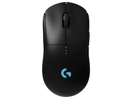
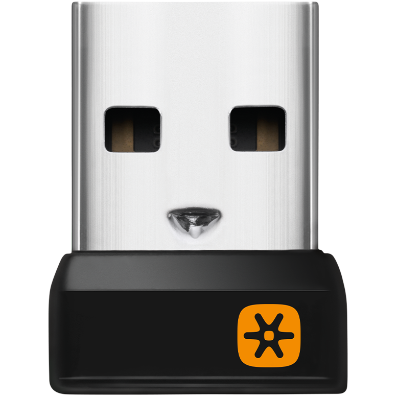
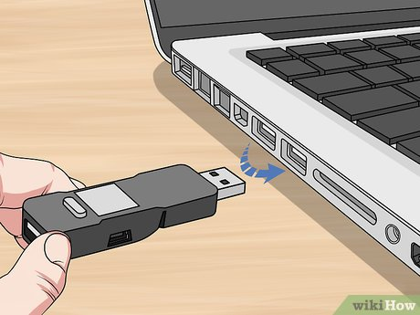
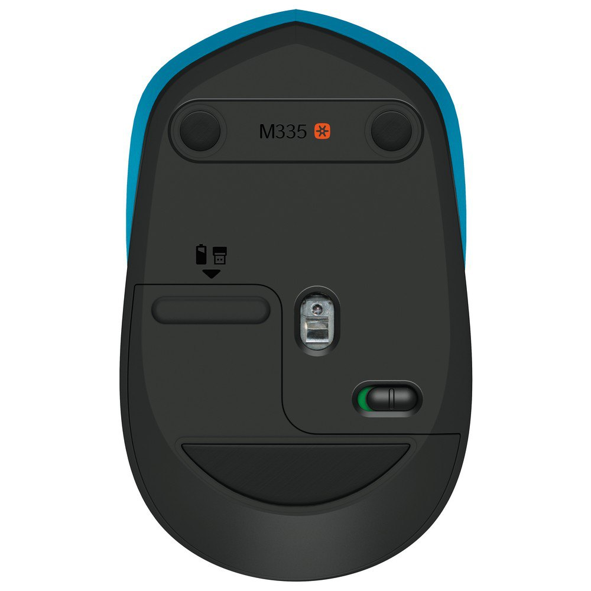
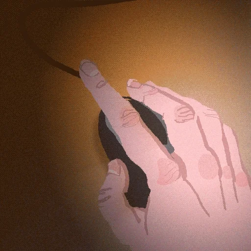
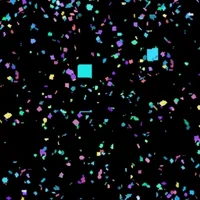

Comment connecter une souris sans fil sur un ordinateur ?
Savoir brancher sa souris est important pour une utilisation efficace de
l'ordinateur. Cela permet de contrôler le curseur, de cliquer et de
naviguer facilement. Brancher correctement sa souris est donc crucial pour
une expérience utilisateur agréable et productive.
Étape 1: Préparez votre souris ( ͡°👅 ͡°)

Étape 2: Sortez la clé USB de votre souris sans fil ᕙ(▀̿ĺ̯▀̿ ̿)ᕗ

Étape 3: Branchez la clé USB dans une prise USB sur votre ordinateur

Étape 4: Allumez votre souris avec le boutton on off en dessous de votre
souris sans fil

Étape 5: Déplacez votre souris sur une surface
Si vous voyez votre curseur bouger, cela voudra dire que vous avez réussi
! ( ͡°👅 ͡°)

Bravo vous avez réussi ! (✧≖ ͜ʖ≖)

Créé par Mathis - Copyright © 2023. Tous droits réservés.